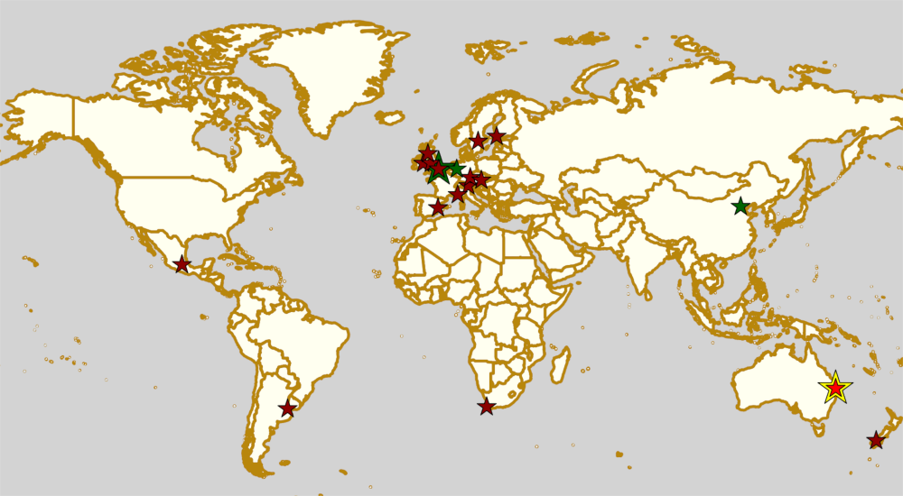

Weekend Highlights: 08 June 2019
As there's a bit less on this weekend, we're doing the one update of Highlights for Saturday through Monday.
The rules are, as usual: highlights limited to 1 event per country, with an "extra" event allowed for a different kind of fixture (so, 1 tournament and 1 bootcamp), or if they involve Scottish leagues (since we are the Scottish Roller Derby Blog). Other notability might also allow the extra event - great posters, notable teams, etc. (League birthdays may count as "special" enough, at our discretion ;) )
This weekend has some excitingly huge tournaments, in Australia in particular, but also France; as well as some big bootcamps (in Germany, and China). It's also the weekend of the last fixtures in the French and Finnish national tournaments - and the first ever fixture in the ARDE-run Spanish National Championships!
In a bid to make this list as useful as possible, we've avoided links to Facebook except where noted. (Links to Teams are to non-Facebook resources - Instagram, or actual team pages - we'd strongly recommend that Teams get themselves an actual webpage [we can help host one if you need help]).
Locations are roughly organised East-West (with things before the weekend out sequence at the start).
Sat: Queenstown, New Zealand
Queenstown Roller Derby host the first game in a new series - the Southland Sushi - which we are hoping to find out more about later.
- Queenstown Roller Derby versus Bonnie Brawlers (Dunedin)
Event starts: 1730 Saturday (doors open)
Venue: Queenstown Events Centre, Queenstown, New Zealand
Sat-Mon: Brisbane, QLD, Australia
Northern Brisbane Rollers host the 2019 edition of the Royal Rumble tournament, one of the famously huge regular Australiasian tournaments. This event has two divisions: an "indie" and a WFTDA division. The WFTDA bouts seem to be already set, to get WFTDA sanctioned games; the indie division is organised as a group stage (with 4 groups of 3), into additional approximate placement games for the #1 and #2 teams from the groups.
It appears to us that the "Indie teams" bouts are also less than the standard 2x30 minute period length...
- WFTDA Teams:
- Auckland Roller Derby League
- Newcastle Roller Derby League
- Sydney Roller Derby League
- Dead End Derby (Christchurch)
- Richter City Roller Derby (Wellington)
- Northern Brisbane Rollers
- Coastal Assassins (Sydney)
- Northside Rollers (Melbourne)
- Western Australia Roller Derby (Perth metropolitan area)
- Indie Teams:
- Central Coast Derby United (Niagara Park area)
- Canberra Roller Derby B
- Varsity Derby League (Canberra)
- Adelaide Roller Derby
- Van Diemen Rollers
- Brisbane City Rollers
- East Coast Derby Dolls (Gold Coast)
- Westside Derby Dolls (west Melbourne)
- Tweed Valley Rollers (Tweed Heads)
- Inner West Roller Derby (Sydney)
- Ballarat Roller Derby League
- Pot Luck Team
Event starts: 0800 Saturday
Venue: 2 Milne Street, Mount Warren Park, Beenleigh, QLD, Australia
Sat-Sun: Beijing, China
Beijing Roller Derby host a Roller Derby "Sur5al Bootcamp", an intensive bootcamp in all aspects of WFTDA derby. The morning includes an introductory session on what WFTDA derby is, into parallel sessions on skater-skills, and officiating-skills. After lunch, there are sessions on communication, followed by a practical series of skater drills (with on-the-job training for officials as part of this), finalising with a block of Sur5al-rules scrimmage to end the day. [EDIT: as of this update, the programme of events has changed - this is now a Rolla Skate Club Short Track Roller Derby scrimmage ending the day!
(For survivors still in Beijing on Sunday, there's a lunch debrief and get together.)
- Morning:
- Skater bootcamp
- Officiating bootcamp
- Afteroon
- Practical skater drills & officiating
- Short Track Scrimmage
Event starts: 0800 Saturday (registration), 0915 (introduction)
Venue: Woodward Skate Center (which we think is now the Beijing International Fashion Sports Park), Weishanzhuang, Daxing, Beijing, China
Sat-Sun: Turku, Finland
Dirty River Roller Derby host the final tournament in the Finnish Championships (Suomi Cup) season! As with all Suomi Cup events, this is to be livestreamed via the Roller Derby Finland youtube.
- Dirty River Roller Derby (Turku) versus Kallio Rolling Rainbow Kinapori Fistfunkers (Kallio/Helsinki X)
- Oulu Roller Derby versus Jyväskylä Roller Derby
Event starts: 1330 Saturday (doors open)
Venue: Kupittaan Palloiluhalli, Lemminkäisenkatu 32, Turku, Finland
Sat: Vienna, Austria
[FACEBOOK LINK] [FTS LINK 1] [FTS LINK 2] [FTS LINK 3] [FTS LINK B]
Vienna Roller Derby host an astonishing quadruple header event, consisting of a triple-header A-teams round robin against Tampere and Lutece (Paris), and a B-teams game against Tampere too!
- Vienna Roller Derby B versus Tampere Howlin' Rolls (Tampere B)
- Vienna Roller Derby versus Tampere Roller Derby
- Vienna Roller Derby versus Lutece Destroyeuses (Paris)
- Tampere Roller Derby versus Lutecte Destroyeuses
Event starts: 1030 Saturday (doors open)
Venue: AHS Theodor-Kramer, Theodor Karamer Straße 3, Vienna, Austria
Sat: Örebro, Sweden
[FACEBOOK LINK] [FTS LINK 1] [FTS LINK 2] [FTS LINK 3]
Örebro Roller Derby host "the Battle of Svealand 2019", an all-Swedish triple header round robin!
- Teams:
- Västerås Roller Derby versus Örebro Roller Derby
- Västerås Roller Derby versus Uppsala Roller Derby
- Uppsala Roller Derby versus Örebro Roller Derby
Event starts: 1030 Saturday (doors open)
Venue: Idrottshuset, SE-702 16 Örebro, Sweden
Sat: Cape Town, South Africa
Cape Town Rollergirls tried Rolla Skate Club's Short Track Roller Derby once, and loved it, so they're doing it again! This is a Short Track home-teams bout, followed by a roller disco for all attendees!
- Short Track bout
- Roller Disco
Event starts: 1700 Saturday (game start)
Venue: Waterville St, Milnerton Rural, Cape Town, South Africa
Sat: Regensburg, Germany
Roller Derby Regensburg host a double-header event, including Bundesliga Division 3 fixture, and an Open To All genders bout featuring South German Men's Roller Derby!
- Rolling Rat Pack (Regensburg A) versus Blockforest Roller Derby (Freiburg A) [Bundesliga D3]
- South German Men's Roller Derby (Southern Germany O) versus "The Rest of the World" (OTA mashup team)
The second bout is not tracked by FTS as it contains a mashup team.
Event starts 1430 Saturday (doors open)
Venue: Clermont-Ferrand-Allee 23, Regensburg, Germany
Sat: Milan, Italy
[FACEBOOK LINK (flyer)] [FTS LINK]
Team Italy Roller Derby hosts a transalpine National Teams triple header, including a rare "cross-gender-policy" bout (a mixed team of RDWC Team Switzerland + Team Italy against MRDWC Team Italy).
- Team Italy (Italy W) versus Team Switzerland (Switzerland W)
- Team Switzerland (Switzerland OTA) versus Woodgang (Milan OTA)
- Team Switzaly (Switzerland+Italy W mixed) versus Men's Team Italy (Italy M)
Only The Italy v Switzerland game can be listed in FTS, as, for example, there's no record of an "OTA" Team Switzerland to list.
Event starts: 1400 Sat (first game)
Venue: Centro Sportivo Vismara, Via dei Missaglia, Milan, Italy
Sat-Mon: Oberhausen, Germany
The Mine Monsters of Oberhausen host a three day, triple-parallel-sessions bootcamp and workshop extravaganza, Open To All genders.
- Skating Bootcamp:
- Coached by Bee A. Baracus (Munich / Team Germany) & Coffin Cutie (Dresden / Team Germany)
- Min-skills and some initial scrimmage level.
- Skating Officials / Referees Bootcamp:
- Coached by The Incredible Hans (Hannover)
- Non-Skating Officials Bootcamp:
- Coached by Franka Frattura
- Workshops on Monday TBA
Event starts: ?? Saturday
Venue: Pflugbeil Arena, Bottroper Strasse 303, Oberhausen, Germany
Sat-Sun: Nice, France
Nice Roller Derby host the 5th edition of their Alerte à Malibout international tournament on the French Riviera, with 2 days of Roller Derby to enjoy. (This is the other fixture that Lutèce are at, whilst their A team is away in Sweden!). With 12 games and 8 teams, we expect that this is some kind elimination format with consolation bouts.
- Teams:
- Amsterdam Roller Derby B
- Bristol Roller Derby B
- Dublin Roller Derby C
- London Rockin Rollers B
- Lutèce Destroyeuses B (Paris B)
- Nantes Derby Girls B
- Nice Roller Derby A
- Roller Derby Lausanne A
Event starts: 0900 Saturday
Venue: 2 Impasse du Square Magnan, Nice, France
Sat: London, UK
[FACEBOOK LINK] [FACEBOOK LINK 1] [FTS LINK A] [FTS LINK B]
London Rollergirls host "The most Offensive Bootcamp You'll Ever Go To", a parallel 2-hour mini-workshop for offence for both Jammers and Blockers (since effective offence needs both to work together). Coached by Beth Lord and Delta Strike.
This is followed by a double-header event, featuring, most excitingly, the best 2019 French National Champions, Nothing Toulouse against London A, in London's first home bout of the year!
- Offence (Jammer & Blocker) Workshop
- London Brawling (London A) versus Nothing Toulouse (Toulouse A)
- London Brawl Saints (London B) versus Hellfire Harlots (Nottingham A)
Event starts: 1300 Saturday (workshop), 1630 (bouts)
Venue: Tottenham Green Pools & Fitness, 1 Philip Lane, London, United Kingdom
Sat: Mold, Flintshire, Wales
North Wales Roller Derby host the next fixture of the British Champs Tier 2M North, a triple header event.
- Bairn City Rollers (OTA) versus Tyne and Fear Roller Derby B
- Knights of Oldham Roller Derby versus The Inhuman League
- North Wales Roller Derby Men versus Teesside Skate Invaders
Event starts: 1330 Saturday (doors open)
Venue: Deeside Leisure Centre, Chester Rd, Mold, Flintshire, Wales
Sat: Glasgow, Scotland
Mean City Roller Derby host a double-header event, with two OTA bouts.
- Rookie OTA bout
- Mean City Roller Derby (Glasgow O) versus Fear & Lothian (Edinburgh O)
The Rookie bout is not listed in FTS, as they are mashup teams.
Event starts: 1130 Saturday (doors open)
Venue: ARC Health & Fitness, Cowcaddens Road, Glasgow, Scotland
Sat: Greystones, Ireland
[FACEBOOK LINK] [FTS LINK 1] [FTS LINK 2]
Dublin Roller Derby host an international WFTDA-sanctioned triple header, as Birmingham's Central City come over from the UK... and Calgary Roller Derby travel a bit further from Canada!
- Dublin Roller Derby versus Calgary Roller Derby All Stars
- Mixed scrimmage (open subscription, )
- Calgary All Stars versus Central City Roller Derby (Birmingham)
Event starts: 1115 Saturday (first bout)
Venue: Shoreline Leisure Greystones, Mill Road, Greystones, Ireland
Sat-Sun: Valencia, Spain
Rayo Dockers host the first ever Division 1 Qualifiers for the ARDE Spanish National Championships. (You can read a bit more about the structure here). This is a 5 team round robin tournament, where the top rated teams will play once again in the Finals in August, to determine the first ever ARDE Champion!
- Teams:
- Rayo Dockers (Valencia)
- Black Thunders Derby Dames (Madrid)
- Roller Derby Madrid
- Sicarias del Cierzo (Zaragoza)
- Ingles de Acero (Barcelona)
Event starts: 0900 Saturday (first bout)
Venue: Pavelló Malva-Rosa, C/ Isabel de Villena 161, Valencia, Spain
Sun: Buenos Aires, Argentina
Chat Noir host a double header of Roller Derby action, with Sailor City Rollers playing apparently two bouts. (The schedule, even this close to the event, still has a "?" for one of the teams...)
- Chat Noir (La Plata, Buenos Aires) versus Sailor City Rollers (Buenos Aires)
- ?? versus Sailor City Rollers
Event starts: 1330 Sunday
Venue: Club Estrella del Sur, La Plata, Buenos Aires, Argentina
Sun: Mexico City, Mexico
[FACEBOOK LINK (flyer)] [FTS LINK]
Liga Roller Derby Ciudad de Mexico 's Tekillerass host Mexico City Roller Derby's Xolas for a game!
- Tekillerass (LRDCM A / Mexico City) versus Xolas (MCRD B?)
Event starts: 1400 Sunday
Venue: Deportivo Salvador Allende, Av. Antonio Díaz Soto y Gama, U.H. Vicente Guerrero, Mexico City, Mexico